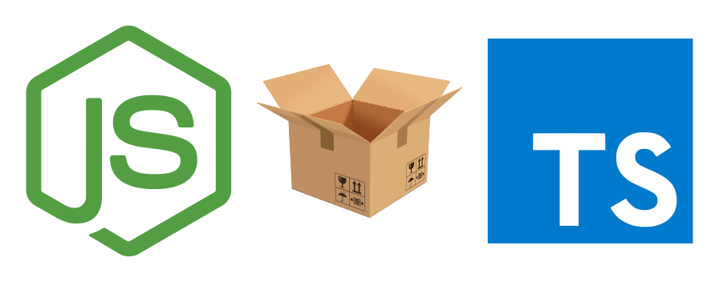

Node.js Ultimate Template

A ultimate starter template for Node.js with TypeScript + Jest + ESLint + Parcel + TypeDoc (+ Gitpod)! 😄
There's also automated testing, linting, and documentation generation using GitHub Actions! ⚡
Let's get started development at the fastest speed! 🏎️
- Use this template on GitHub
- View documentation generated by TypeDoc
- View code coverage report by Jest
✨ Features
- TypeScript
♻️ Lint and Test
- Jest
- ESLint
🔨 Development
- Parcel
📝 Documentation
- TypeDoc
- Code coverage report by Jest
🌌 Others
- Automated testing, linting and generating documentation using GitHub Actions
- Gitpod support
🎨 App structure
field in ./package.json |
value |
|---|---|
source |
src/index.ts |
main |
dist/index.js |
types |
dist/index.d.ts |
$ tree src
src
├── index.ts
├── main.test.ts
└── main.ts
0 directories, 3 files
🎉 Get started (automatic if using Gitpod)
Requires:
tmux(used bynpm run devandnpm run docs:serve)
npx degit sakkke/nodejs-ultimate-template [project-name]
cd [project-name]
npm i
npm run dev
Stop npm run dev
- Press
<C-b>:killw<CR> - Done!
Manually lint and test instead of npm run dev
Compile on change
npm run watch
Run Jest in watch mode
npm run test:watch
Run ESLint in watch mode
npm run lint:watch
Run TypeDoc in watch mode
npm run docs:watch
Serve _docs
npx serve _docs
🔰 Checklist
- Check or update
./LICENSE - Update
name,version,description,authorin./package.json - Change
env.PUBLISH_*_SCOPEfields in./.github/workflows/main.yml(see #Scope) - Set GitHub Pages source to
gh-pagesbranch - Update
./README.md
🚀 Deploy with GitHub Actions
Overview
This template supports publishing to GitHub Package Registry and npm Registry with GitHub Actions.
To publish, you push the commit that starts with :bookmark:.
Also, you can use the commit that starts with :bug:, :sparkles: or :boom:.
They are incrementing version field in ./package.json and publishing at the same time.
| Start with | What kind of increment |
|---|---|
:bug: |
It increments patch version (like npm version patch) |
:sparkles: |
It increments minor version (like npm version minor) |
:boom: |
It increments major version (like npm version major) |
Important
You must need secrets.PAT.
This is GitHub Personal Access Token.
Scope
| Registry | Default scope |
|---|---|
| GitHub Package Registry | @sakkke |
| npm Registry | @0wv |
To change, you must edit env.PUBLISH_*_SCOPE fields in ./.github/workflows/main.yml.
Example
First publish
$ git commit --allow-empty -m ':bookmark: v0.1.0'
$ git tag v0.1.0
$ git push --follow-tags
Publish package as v0.42.0
$ git commit --allow-empty -m ':bookmark: v0.42.0'
$ git tag v0.42.0
$ git push --follow-tags
Publish package with incrementing minor version
$ git commit --allow-empty -m ':sparkles: release'
$ git push
🍁 Related
- Svelte Ultimate Template - A starter template for Progressive Web App with Svelte + TypeScript + SugarSS
📄 License
Unlicense